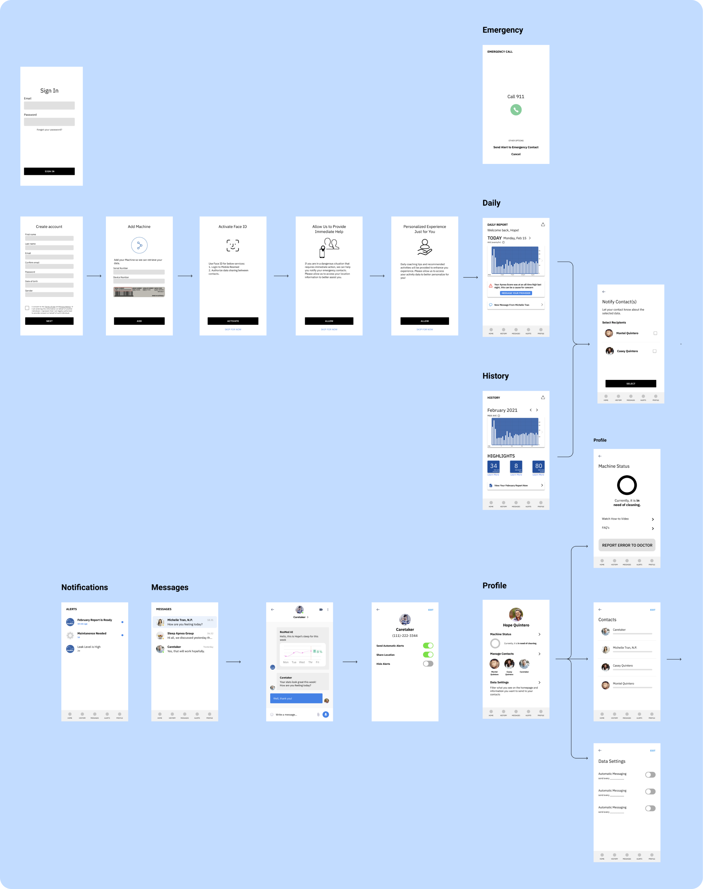

For this project, our team was prompted to design a native mobile app for ResMed. Specifically, the company is interested in bringing about a service orientation to augment the company’s traditional product-centric offerings. Through research and iterative design, the solution our team provided is a smart, comprehensive platform that integrates Resmed’s sleep products with a mobile-first, software ecosystem that connects patients, physicians and caretakers in a disconnected world for more effective remote care.
UX Designer
User Researcher
4 Weeks
Ji Park, Mansi Agarwal, Shai Bhardwaj, Janelle Wen
ResMed is a leader in cloud-connected medical devices that help patients with sleep apnea, Chronic Obstructive Respiratory Disease (COPD) and other chronic respiratory diseases. They offer software and hardware platforms to support patients, medical professionals and caregivers to help patients stay healthy in their homes or care settings.
ResMed’s ecosystem combines connected devices and their software platform to create a holistic ecosystem for
patient ventilation monitoring. Their current offering includes:

To understand the ResMed ecosystem better, I identified 9 key stakeholders, their goals, needs and other attributes, while keeping a focus on their jobs-to-be-done.
I noticed that communication between direct stakeholders in patient care (Patient Support, Providers, ResMed Internal) was lacking and was a good space to create a service in.
After stakeholder mapping, we created design briefs to delve into the possible ways our native app could help each stakeholder in our map. As a team, we voted to decided on our top three design briefs. The first two were in the perspective of the patient, and the last one was in the perspective of the caretaker / loved one. This initiated a discussion on who the main user should be, and how we can best cater to them. The idea of connectedness (especially during the pandemic), became a main goal of our app.

Before diving into building our wireframes, I made a list of tasks that we wanted our user to be able to complete. This would serve as a rough outline for our user flow, which mapped how the user could progress from one step to another.

After sketching and creating the wireframes for the design, we received some critiques:
Based on the wireframes, I then focused on flushing out the user-flow of our app. In response to previous feedbacks, I included a complete onboarding experience for setting up the account and allowing for data collection. I also incorporated more native functions of the phone such as face ID, location data, fall detection,etc.
Our app RestEasy uses mobile navigation functions such as camera, face ID, location data, etc. As a result, the onboarding experience is an essential design decision that helps us to establish a friendly and approachable tone in order to encourage our users to grant us access to this data.
From last critique, people see potential in providing more value to the users through ResMed AI. For the final design, we reimagined ResMed AI to better serve as an automated conversation mediator. By recognizing key data metrics and conversation keywords, the AI chat bot can automatically provide the corresponding data and suggestions for the users. This will effectively reduce friction among user interactions.

Due to the scope of this project, I chose to mainly flush out the onboarding and messaging portion of this app. Overall, oour team have managed to build out a relatively comprehensive mobile application that bridges the current gaps within the ResMed ecosystem. We believe that our design further adds to ResMed’s SaaS(software as a service) solutions.